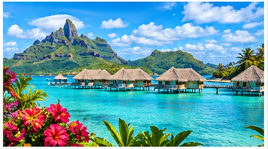
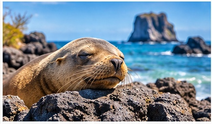

EXOTIC DESTINATIONS
Beyond the Familiar.
Into the Extraordinary.
Some journeys take you farther than miles. They introduce you to landscapes, cultures, wildlife, and experiences that feel unlike anything you have known before.
PICTURE YOURSELF SOMEWHERE NEW
What if your next favorite place is one you have never imagined?
An exotic cruise can carry you beyond the destinations everyone knows. Think hidden coves, ancient cities, faraway islands, wildlife found nowhere else, and mornings when the view outside your window makes you wonder how a place like this can be real.
Step Into Another World.
Walk streets shaped by centuries of history. Hear a language you do not speak. Taste something you have never tried before. Wander through markets, temples, villages, harbors, and neighborhoods that remind you just how large and varied the world really is.
The best travel does more than show you a place. It changes the way you see.
Find Paradise Far From Ordinary.
Maybe it is a lagoon so clear you can see the reef beneath the water. Maybe it is an overwater bungalow, a quiet island village, or a beach framed by mountains you have only seen in photographs.
The South Pacific and other faraway island destinations can make everyday life feel wonderfully distant.


See Things You Cannot See Anywhere Else.
Some destinations are unforgettable because the natural world still feels close and untamed. Imagine snorkeling beside marine life, watching unusual wildlife from shore, or standing in a landscape shaped by volcanoes, reefs, jungle, or desert.
These are the kinds of moments that become the stories you tell for years.
IMAGINE THE MOMENT
You look around and realize you are very far from home.
Not because anything feels wrong, but because everything feels new. The colors, the sounds, the landscape, the people, the food. For a little while, the world feels bigger again.
READY TO DISCOVER SOMEWHERE EXTRAORDINARY?
Let’s Make This Dream Come True.
LET’S MAKE THIS DREAM COME TRUE ›Tell Ashley what kind of experience you are dreaming about, even if you do not know the destination yet.